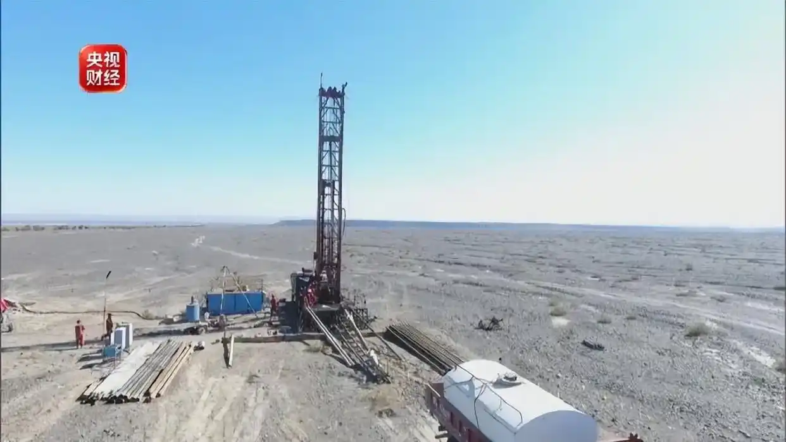
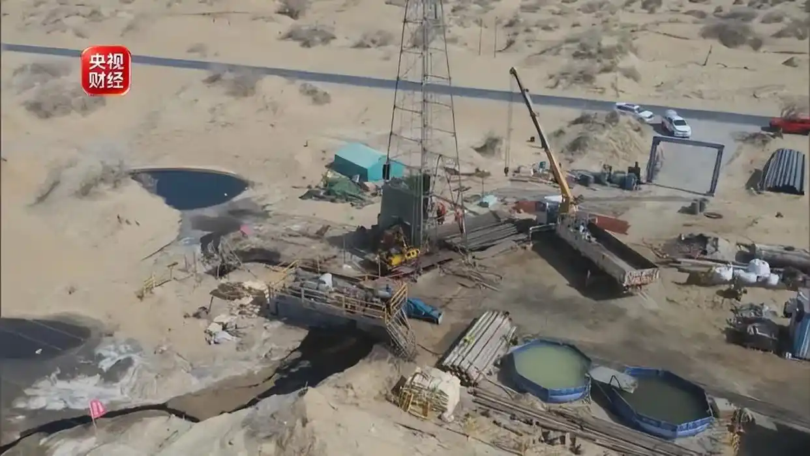
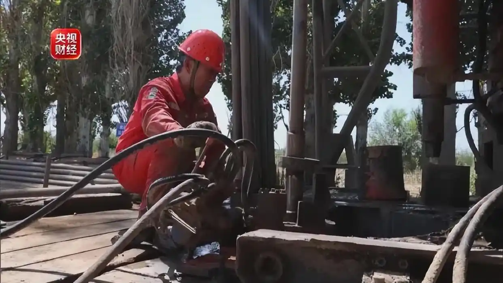
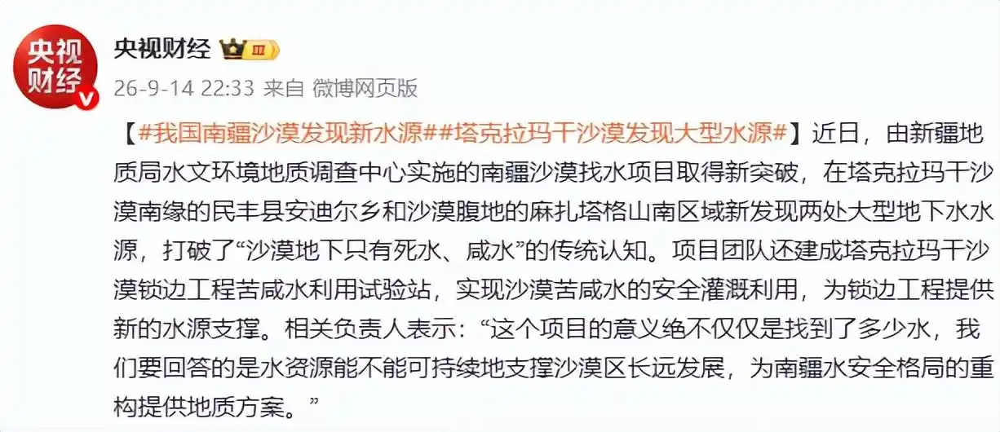

近日，由新疆地质局水文环境地质调查中心实施的南疆沙漠找水项目取得新突破，在塔克拉玛干沙漠南缘的民丰县安迪尔乡和沙漠腹地的麻扎塔格山南区域新发现两处大型地下水水源，打破了“沙漠地下只有死水、咸水”的传统认知。 项目团队还建成塔克拉玛干沙漠锁边工程苦咸水利用试验站，实现沙漠苦咸水的安全灌溉利用，为锁边工程提供新的水源支撑。相关负责人表示：“这个项目的意义绝不仅仅是找到了多少水，我们要回答的是水资源能不能可持续地支撑沙漠区长远发展，为南疆水安全格局的重构提供地质方案。”


项目团队还建成塔克拉玛干沙漠锁边工程苦咸水利用试验站，实现沙漠苦咸水的安全灌溉利用，为锁边工程提供新的水源支撑。相关负责人表示：“这个项目的意义绝不仅仅是找到了多少水，我们要回答的是水资源能不能可持续地支撑沙漠区长远发展，为南疆水安全格局的重构提供地质方案。”

